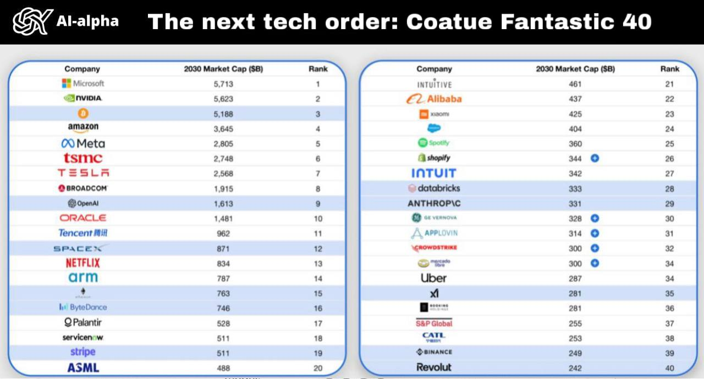
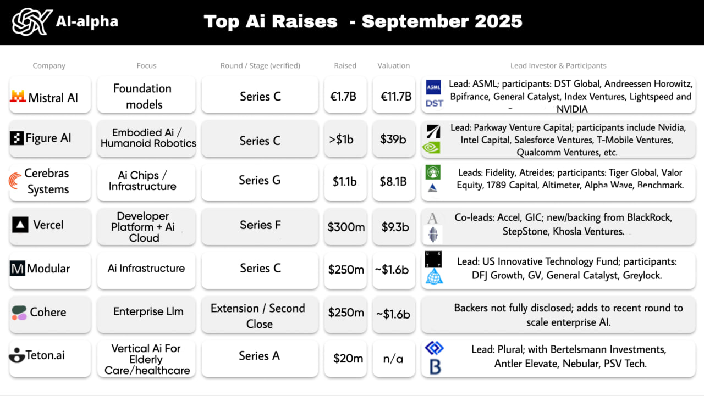
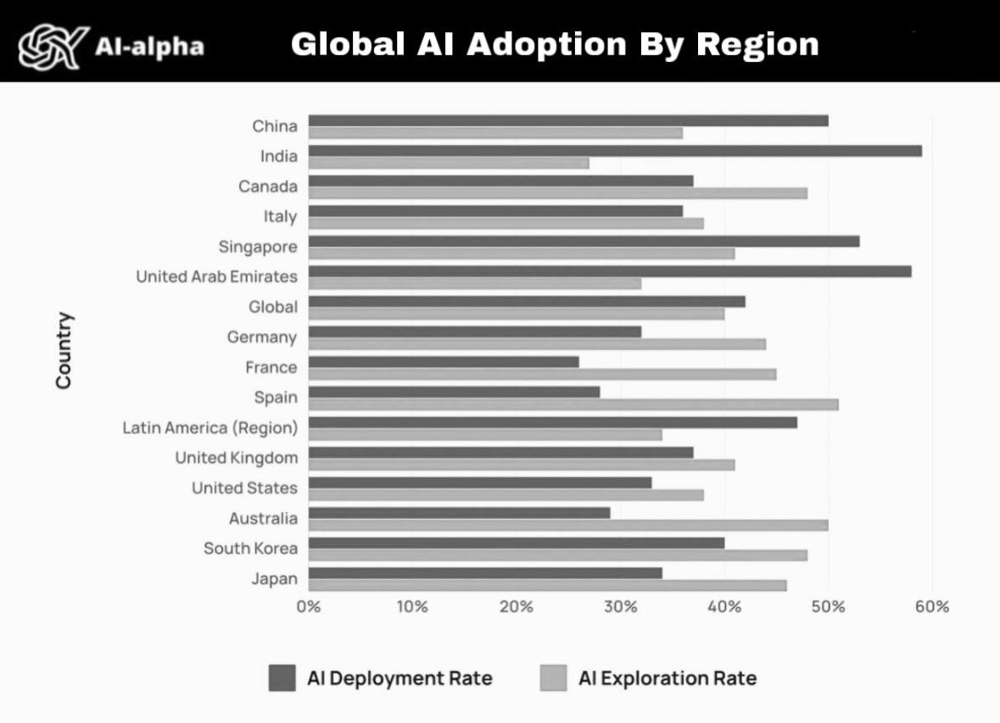
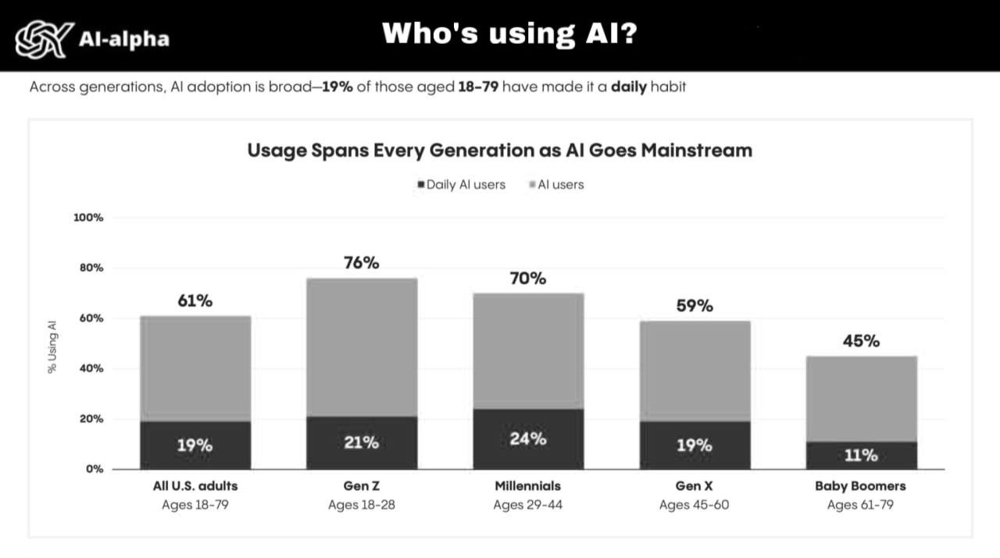

Research • Oct 2025
Coatue Fantastic tech-40

Philippe Laffont ($8B) at the annual EMW 2025 conference (organized by hedge fund Coatue, where Laffont is a co-founder) recently presented a 100-slide presentation about AI.
Market predictions: Nvidia and Microsoft will be worth $5 trillion each, Broadcom and TSMC $2 trillion each, Meta and Amazon $3 trillion each, while Google and Apple won't even make the top 40!
Funding • Oct 2025
AI Fundraising Statistics for September

Statistics of raised investments in AI for September.
Research • Oct 2025
Who Will Actually Become the AI Superpower? The One Who First Closes the Gap Between Exploration and Deployment

Experts have compiled fresh statistics by country:
AI Deployment Rate - the share of companies where AI is already working in production. AI Exploration Rate - where it's still only being tested.
The race to become the AI superpower isn't just about having the best technology - it's about who can first bridge the gap between exploration and deployment. This data reveals which countries are leading in practical AI implementation versus mere experimentation.
Research • Sep 2025
Who Actually Uses AI Most? Spoiler: Not Gen Z! (And How to Profit from This Statistic)

It's usually assumed that the most tech-savvy are young people. But this time, it seems things aren't so obvious.
Surprising statistics reveal which demographic group is actually driving AI adoption and usage patterns. The data challenges conventional wisdom about technology adoption and presents unique opportunities for businesses and investors.
Funding • Sep 2025
August Roundup: Top AI Fundraises
AI‑alpha prepared August analytics: a concise summary of last month’s top AI company fundraises.
August was hot for AI venture. In total, companies raised tens of billions. Leading the month — OpenAI — with a record $8.3B round at an implied ~$300B valuation.
Opinion • Sep 2025
LLM Is an Iron Man Suit, Not the Iron Man
Insights from Andrey Kurpatov’s talk on Software 3.0 (YC AI‑Startup School 2025).
Evolution of software paradigms:
- Software 1.0 — traditional code written by humans.
- Software 2.0 — neural networks and weights.
- Software 3.0 — LLMs, programmed with natural language.
Software 3.0 is a fundamental shift: human language becomes the new programming interface. An LLM is not just a tool but a new kind of “computer” — worthy of a software version upgrade.
Market • Sep 2025
AI Applications Market: A VC’s Perspective
Research on the AI applications market by a venture investor who grew an eight‑figure capital 20× during the ICO hype and DeFi Summer.
The current AI market landscape (Q3 2025) resembles Web3 in 2017–2018. Giants like OpenAI, Google, Anthropic, X (Grok), and Meta are in the phase of peak institutional inflows, channeling capital into a race for compute, model capabilities, and top-tier recruiting.
This race mirrors the L1 blockchain infrastructure sprint of 2017–2018. Ethereum, Solana, Avalanche, Binance Chain (as well as faltering EOS, ICX, Polygon, Fantom, Near, and others) first attracted hundreds of millions to billions in venture capital, then competed on throughput, latency, and transaction costs.
Case Study
How the Best Accelerator’s Spirit Won a Red‑Ocean Market in a Year
Let’s talk YC again. In 2024, two UC San Diego students entered an ultra‑competitive, consolidated market of DeFi trading platforms. They founded Axiom and started shipping fast.
What made the difference wasn’t a “magic pill” but the accelerator discipline: relentless focus on building faster, talking to users, and showing growth. More on Axiom: axiom.trade.
Playbook • YC
One Factor That 3× Increases AI Startup Survival
Y Combinator isn’t a magic pill. It’s a three‑month sprint where you learn to do just three things: build faster, talk to users, and show growth.
Debate
"AI Startup Founders Are Wasting Time" — The Corporate Moat View
A provocative claim: OpenAI, Google, Microsoft, Anthropic, and other giants have seized most key layers of AI. In this view, only giants can afford to build new LLM products in 2024–2025 — Musk with Grok, Zuckerberg with Meta's top‑paid teams, perhaps Apple.
Guide • 2025
Top 5 AI Accelerators for Eastern European Startups
We've compiled the best AI accelerators for Eastern European startups at pre-MVP/MVP stage.
Y Combinator — The legend. Access to the world's best community. $500k investment per company. From 20k applications, they select a couple hundred. Very difficult for Russian founders to get in, but possible. *US relocation required for at least 1 co-founder.
Techstars — Strong AI-focused program, better suited for tech founders. $120k investment. Lifetime access to alumni network. *Available remotely.